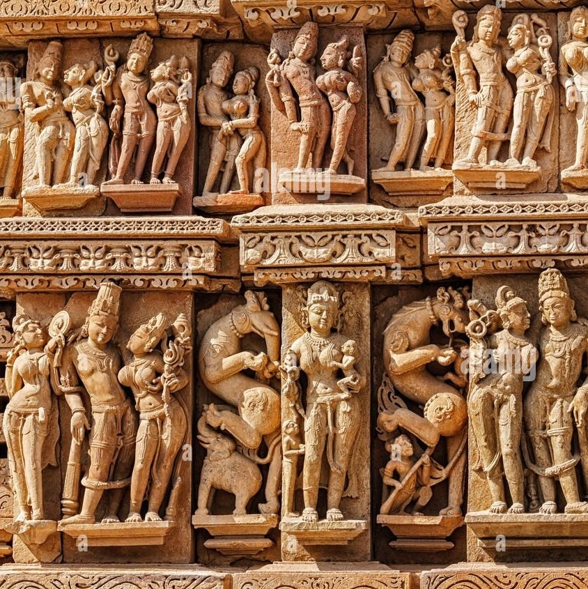
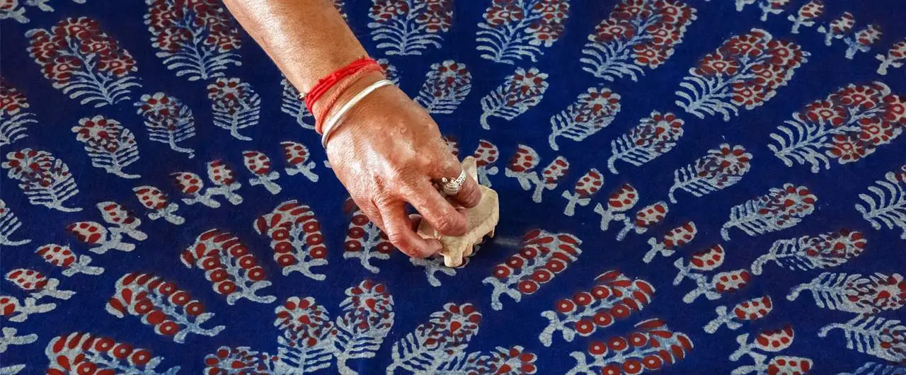

🎨✨ The Soul of Central India: Art & Culture Unveiled 🎶🖌️
🖼️ Traditional Art Forms – Rustic Strokes & Timeless Prints 🖌️
Marble Art of Bhedaghat 🗿
The sculptors shape the astonishing white marble into intricate deities and other quirky sculptures. Stones found in the bed of Narmada provide occupation to many carvers and their families.
Batto Bai Dolls 🪆
Named after Batto Bai, an enterprising craftswoman from Gwalior.
These dolls range from few inches to almost 2 ft. in height are popular to decorate the household.
Bead Jewellery 📿
The tribal communities like Bhil and Bhilala who practise bead work, skilfully express their notions in the designs of bead necklaces, bracelets, and earrings.
🪡 Handicrafts – Marvels of Craftsmanship
Dhokra Art 🎎
Ancient lost-wax metal casting technique, mainly in Bastar.
It's a non- ferrous (other than iron or steel) metal moulding craft.
Zari Zardori 📿
Zardozi comes from the Persian term which means 'embroidering with gold threads'.
In this embroidery, gold coils and beads are tucked onto fabric using a needle and thread.
Blue Pottery of Gwalior 🏺
Pottery Craft is the earliest known method of non-ferrous metal casting known to human civilization.
Unique ceramic art with Persian influences.

Bhilai Terracota Art 🕊️
The ancient and exquisite Terracotta art, an art form that has been shaping the cultural fabric of this region for centuries.
From festive fairs to sacred rituals, this earthy art continues to hold a special place.
🪢 Textile and Weaving Heritage – Threads of Elegance
Charismatic Chanderi Sarees 🧣
The rich textile of Chanderi is unique in its texture and embraces hand woven embroidery.
Chanderi Sarees are among the major handlooms of India which are internationally acclaimed.
Maheshwari Sarees 🥻
Maheshwar is best known for being the hub of handloom weaving since the 5th century, but it gained fame during the rule of the powerful Maratha queen Rani Ahilyabai Holkar (1767-1795).
🛕 Stone and Wood Carving – Precision and Perfection

Gwalior Stone Carving ⛏️
Madhya Pradesh abodes many beautiful specimens of stonework in its temples, and forts.
The architectural landmarks of the state, most notably the UNESCO world heritage site of Khajuraho temples, Stupas of Sanchi and the magnificent Fort in Gwalior
Bastar Wooden Art 🪵
Bastar, in state Chattisgarh is gifted with an abundance of vast forest lands that nurture unique varieties of woods and, hence, supply an abundance of raw materials for artisans.
Intricate wood carvings depicting tribal culture.
🨠A Tapestry of Timeless Paintings & Folk Art" ✨
Bagh Print 🖌️
Traditional block printing using natural dyes, mainly in red and black.
Carried out by a huge workforce in the town of Bagh in Madhya Pradesh, Bagh printing is all done manually.
Gond Painting 🎨
Gonds are the largest tribal community in India.
For the Gond community, Gond art is majorly inspired from nature as art is everywhere in nature.
Mandana Art 🖌️
Mandana is a form of folk painting created by one of the oldest tribal communities of Madhya Pradesh called 'Meena'.
The art is created on walls and floors of houses and usually done by women.
Nandna Print 🎨
Popular among Bhil tribe, the art includes graceful yet aligned arrangements of motifs on the fabric.
Traditionally, there are four motifs namely, Mirch (chilli), Champakali (magnolia bud), Amba (mango) & Jalam buta (creeper web).

Batik Print 🖌️
An age-old craft of wax-resist dyeing and printing.
The village of Bherugarh consists of about 800 men and women involved in printing.
Pithora Painting 🎨
Ritualistic wall paintings by Bhil and Bhilala tribes.
The uniqueness of Pithora art lies in the fact that the artists use horses to represent Gods and Goddesses.
🧺 Weaving and Basketry – Heritage of Utility and Beauty
Durrie Weaving 🧵
Businessmen saw a great potential in the city and established a weaving cluster focused on durries and tent material to cater to the travelers halting in the city.
Today, the cluster is one of the major suppliers of colorful handwoven durries in the country.
Bamboo Basketry 🍂
The bamboo craft of Madhya Pradesh is a reflection of its raw tribal lifestyle.
It continues to serve purposes both functional as well as ornamental.
🕊️ Eco-Friendly and Sustainable Crafts
Papier Mache of Ujjain 📄
Papier Mache is an art that involves the use of paper pulp mixed with the adhesive to create an artefact or decorative article.
Insence Stick 🥢
In Maihar where flowers offered at Maa Sharda Devi temple are collected by local women and then converted into incense sticks called 'Sacred in Sense'.